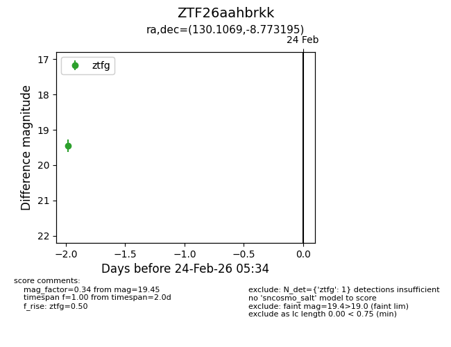
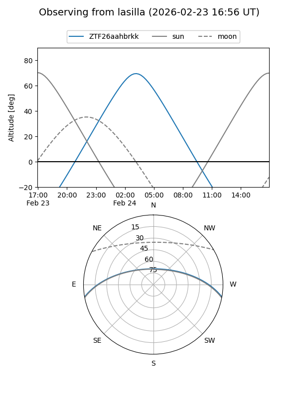
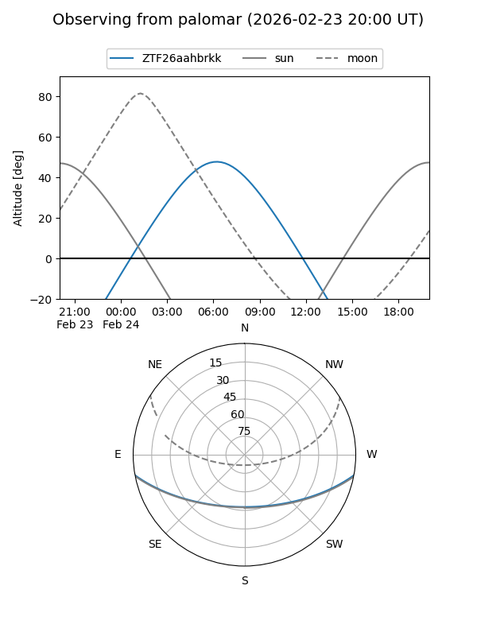

ZTF26aahbrkk
Target ZTF26aahbrkk at 2026-02-24 09:08
Aliases and brokers:
FINK: link
Lasair: link
ALeRCE: link
alt names
ZTF26aahbrkk (ztf,fink_ztf)
Coordinates:
equatorial (ra, dec) = 130.1069,-8.77320
equatorial (HMS+DMS) = 08:40:25.65,-08:46:23.50
galactic (l, b) = (234.2036,+19.46012)
Flags:
Photometry:
last ztfg=19.45
1 ztfg detections
Lightcurve

Visibility


Additional plots